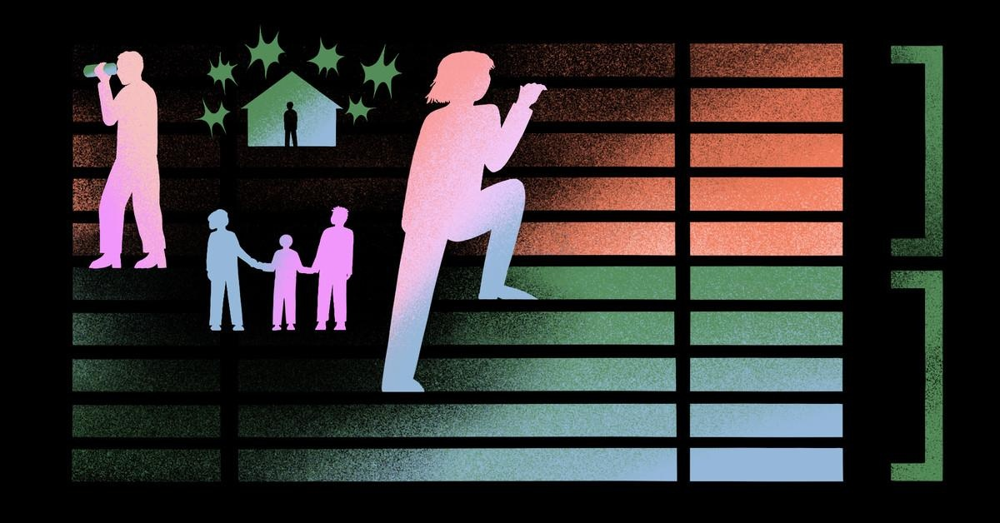

What should I do if I didn’t pay my taxes?On the Money is a monthly advice column. If you want advice on spending, saving, or investing — or any of the complicated emotions that may come up as you prepare to make big financial decisions — you can submit your question on this form. This month, we’re answering four reader questions about taxes — and to ensure that we’re giving the best advice, I’m teaming up with Caitlynn Eldridge, an Omaha-based CPA who has spent her entire career focusing on tax prep, including two years with Deloitte Tax Services. You can read more of Eldridge’s advice in our CPA Q&A, but let’s start with these four common tax questions. I moved into a new tax bracket. How should I manage that, and what are the things I should be aware of? ND: Okay, I feel like both you and I know the answer to this one, but it needs restating. (We didn’t actually restate this, but if we had, it would have gone something like this: When you move into a new tax bracket, only the amount of money that falls within the new bracket gets taxed at a higher amount. If you are a single person whose income went from $90,000 to $100,000, for example, according to the 2023 tax brackets you’d pay 10 percent tax on the first $11,000 of your income, and then you’d pay 12 percent tax on the next tranche of income up to $44,725, then 22 percent on the next tranche up to $95,375, and 24 percent on the last chunk of your income. You’re really only paying higher taxes on $4,625, in this example — and that number could be even smaller depending on your deductions and credits.) CE: Yes! You have to pay a new percentage on every dollar in the new bracket, but nothing else has changed! ND: The old money still gets old taxed! CE: I still have clients who come to me and say, “I don’t want to make any more money. I’m paying too much in taxes!” We don’t have a 100 percent tax bracket, you’re still making money, go enjoy! What should I do if I haven’t paid my taxes in previous years? I’m lost on how to remedy this. CE: When you’ve fallen behind on your taxes, that’s when it’s time to get somebody to help you. It’s going to cost you to have a professional come in, but you’re going to want some handholding as you go back and file. There’s a decent chance that if you were a W-2 employee, you might not owe any money. You might even get a refund! But if you do owe, the IRS is really good about it. There are payment plans, maybe you can find a family member to give you a low-interest loan, and we can work with the IRS. They’re not showing up at your door, you’re not getting arrested, we have time to work things out. That said, we need to get something filed so you can move on with your life. (We should have mentioned that there is a point at which you can get arrested for tax evasion and other forms of tax fraud, so be aware that you can’t just put off paying your taxes indefinitely. Also, you may be charged penalties for late filing and missed payments — which is why it’s a good idea to get caught up on your taxes as quickly as possible.) ND: And just to reiterate — if you’re 18 and you have a part-time job, you need to pay taxes. If you’re in school and you have a scholarship, you’re probably paying taxes. CE: Yes! Even if you’re 16, if you’re working, you’re going to owe. If you drove for Uber Eats, that’s income. The IRS doesn’t distinguish between part-time jobs and gig economy jobs and full-time jobs. If you’re making money, you have to report it. That said, you have to make over whatever the standard deduction is for the year before you might end up paying any taxes [beyond what is deducted out of your paycheck], and if you have a scholarship, you have to earn more with your scholarship than what you’re paying in costs for it to be considered income. My partner and I decided not to get legally married, and we have a son. How do we decide who claims our son for taxes? ND: I don’t know the answer to this one, which is why I’m very glad you’re here. CE: In this case, since it sounds like the letter writer and their partner are on good terms, they get to decide. I’d lean toward the person with the higher income, since they might see the bigger benefit, but this is where we can use tax software to figure things out. If this person claims the child as a dependent, what will their taxes look like, and if the other person claims the child as a dependent, what will those taxes look like, and which one is better? When we’re getting along, we get to make the decision. We don’t have to go through the IRS tiebreaker rules. If we get to the point where we’re not getting along and we’re not communicating, then we start asking questions like, “Who did the child live with for the majority of the year?” I got married and we bought our first house this year. Everyone keeps telling us we’re going to have a big refund. Is that true? I’ve always done my own taxes, do I need a tax professional for this eventful year? ND: Is this the year to go pro? CE: Totally do it yourself. The house, typically, would have been a big deal when more people itemized their deductions. Ever since the Tax Cuts and Jobs Act (TCJA) came into effect, the standard deduction became so high that it’s very, very rare to see anybody itemize. Not only did the standard deduction go up, but we also capped itemizing our taxes for state purposes. Honestly, the fact that you bought a house won’t have that much of an effect on your taxes, so you’re just going to pull up that software and your status is going to be married filing jointly, most likely, and you’re going to put in your W-2s and take the standard deduction. The software can definitely handle that for you. |
 |